Beyond physics
Outreach and life outside the office
Theoretical physics has a reputation for being arcane and disconnected from everyday life. Instead, I think most of it can actually be explained, at least in spirit, to anyone who is curious, and that's what I aim to do. This page collects my attempts at doing so, plus the public-facing activities I am involved in.
What is it that I do?
In one sentence: I use mathematical models (some inspired by string theory) and computer programs to simulate and hopefully understand what happens at the densest events in the universe, like at the core of a neutron star. Funnily enough, the model is the same that can explain how water boils.
In a few more sentences: when two neutron stars merge, or when one accretes material on its surface, the matter at their core is compressed to densities far beyond anything we can reproduce on Earth. Nobody knows exactly how matter behaves in that regime — and we think it might undergo a sudden phase transition, analogous to water suddenly turning to vapor via the nucleation, expansion and collision of bubbles. If that happens, the bubbles leave a fingerprint in the gravitational field, emitting gravitational waves that we've recently learned to detect. My job is to model that fingerprint, so that when next-generation detectors come online we already know what to look for.
Public talks & outreach activities
- 2026 Italian Science Slam, Frankfurt
- 2025 FameLab Italia, Ferrara
- 2024 Festival della Scienza, Genova: "Supercomputing and Big Data: new technology for new research horizons"
- 2024 Workshop PNRR, Firenze: "Why do we need a supercomputer to study boiling water?"
- 2024 PhD Day, Firenze: "Why do we need supercomputers to study boiling water?"
- 2020 Museum of Mathematics Il Giardino di Archimede, Firenze: guide for school groups
Videos and photos

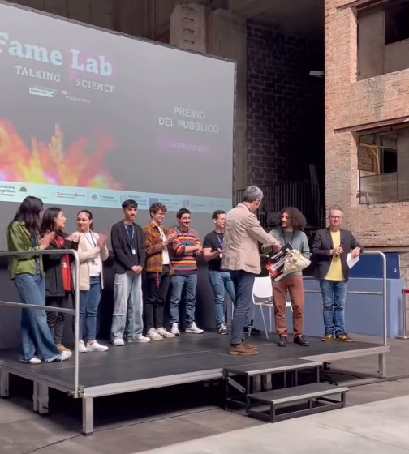

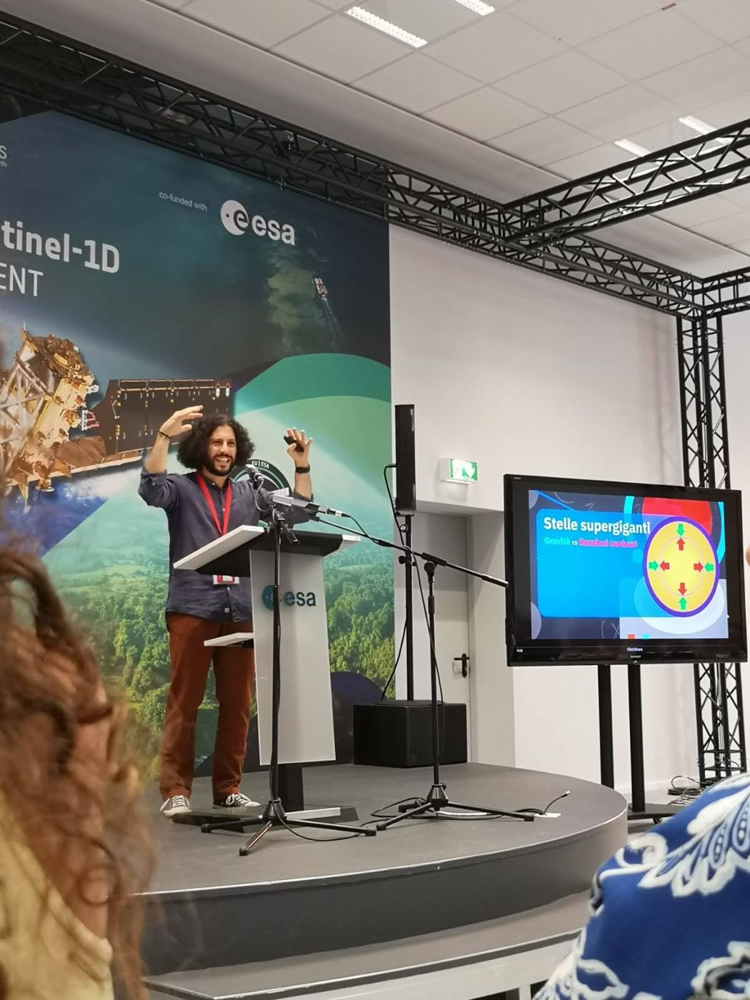

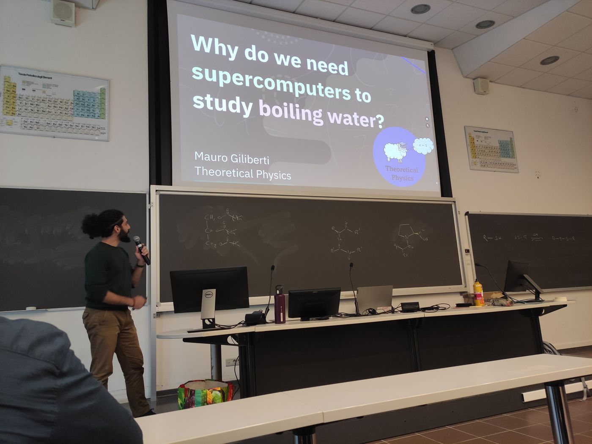

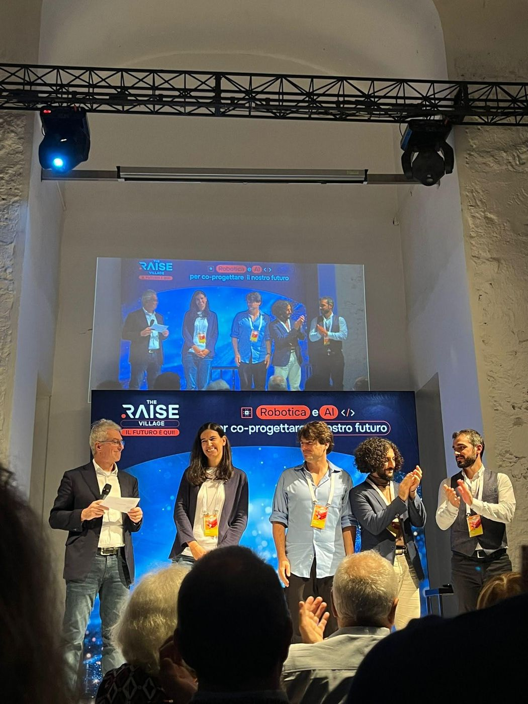

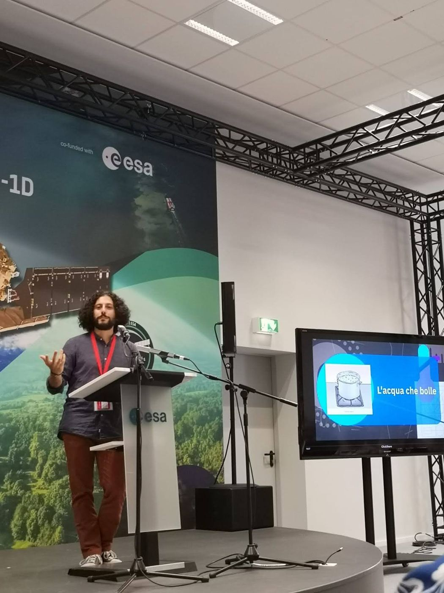

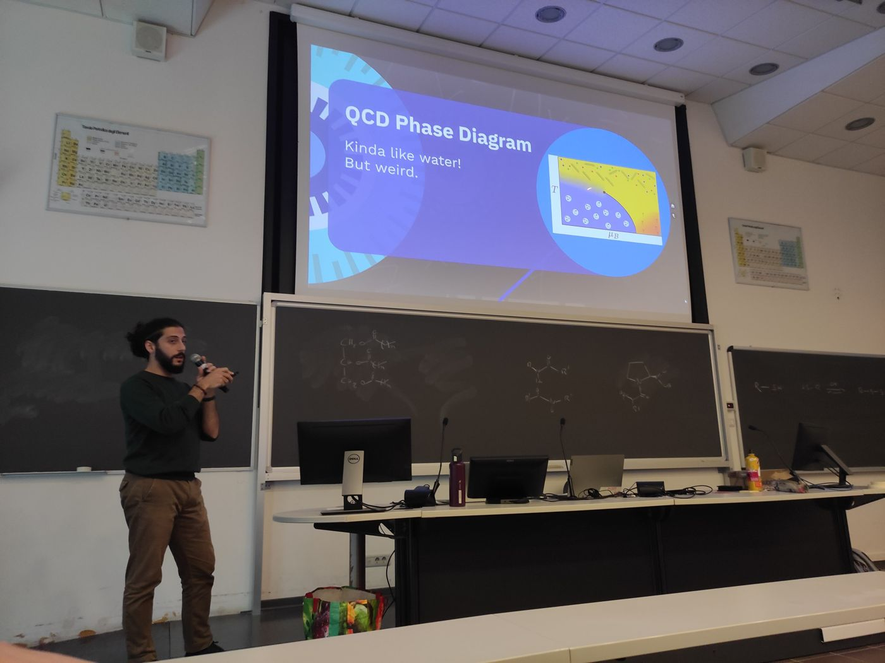

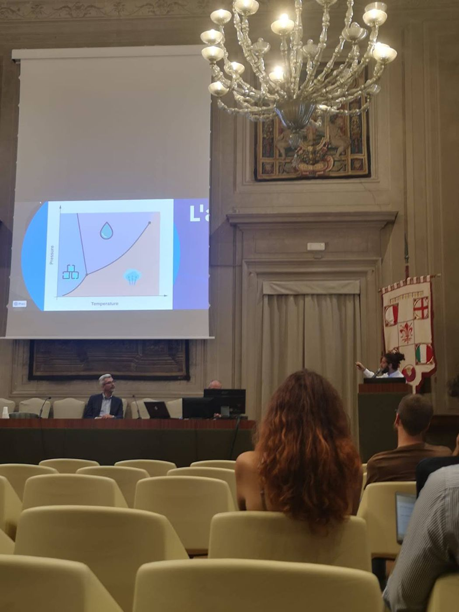

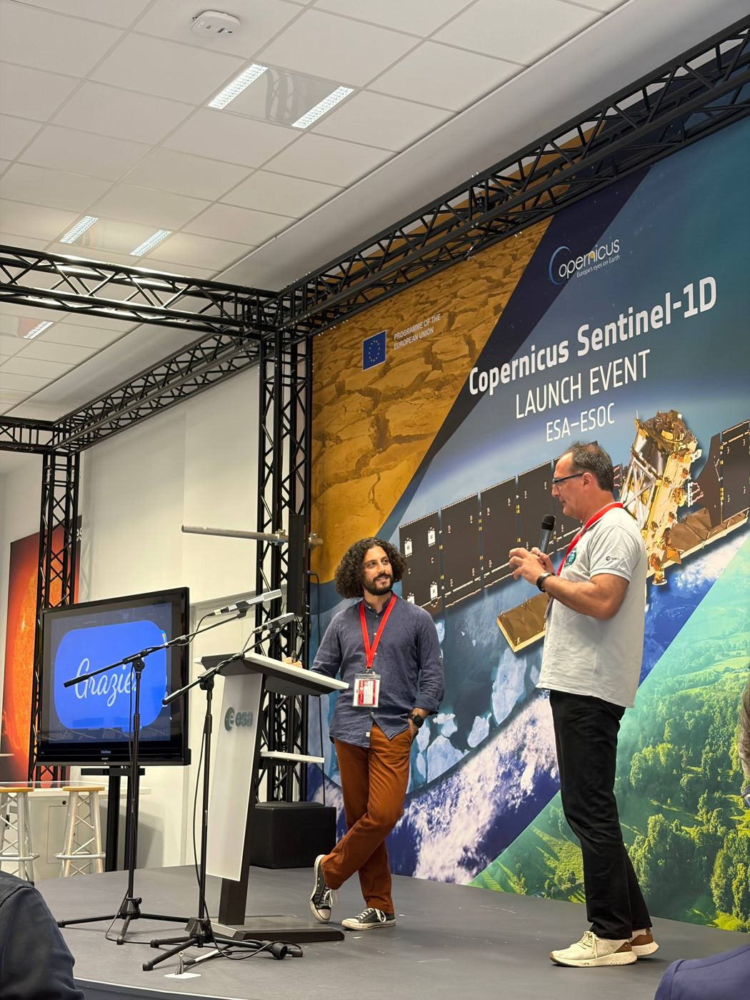

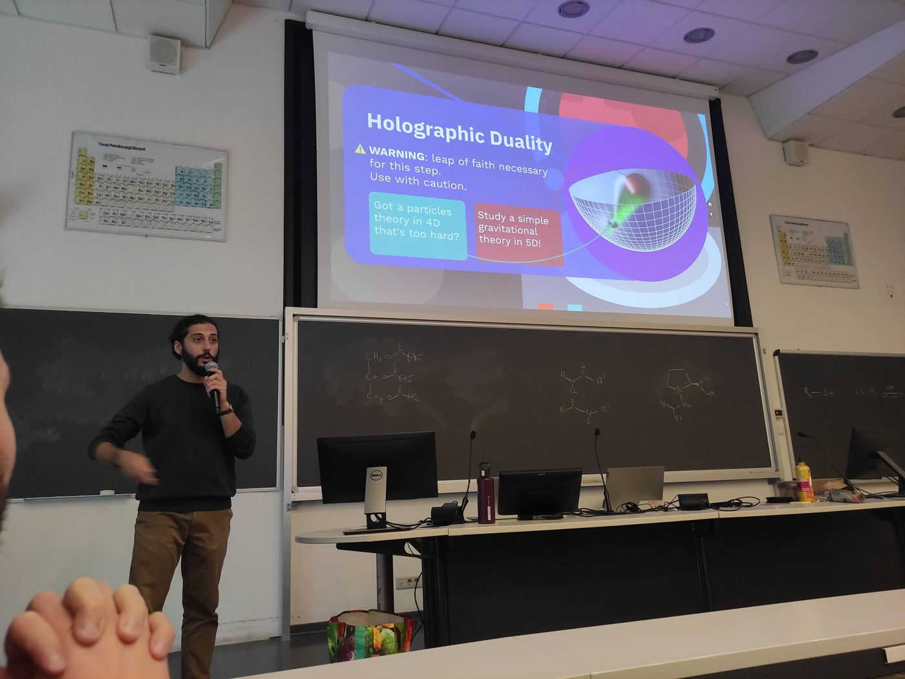
Scouting
I am a scout group leader in the AGESCI scouting movement, the Italian Catholic scouting association. I deeply value the educational dimension of scouting and the way it teaches responsibility, curiosity and care for the world we live in. A good chunk of my weekends and summers belongs to this part of my life.
Photos from past trips around the world

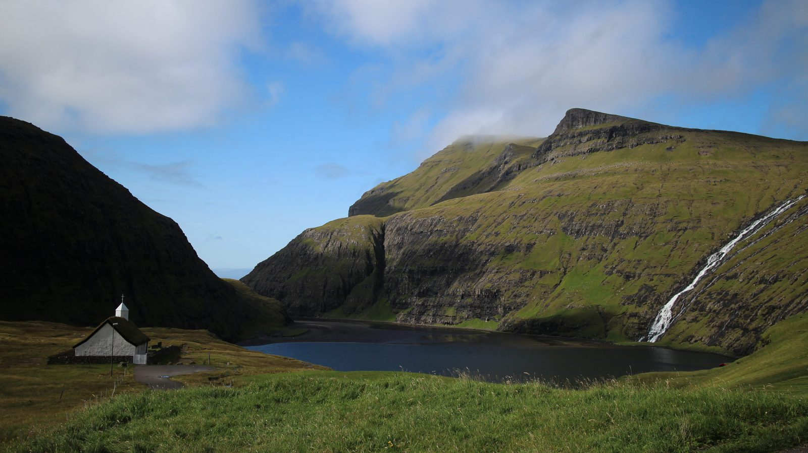

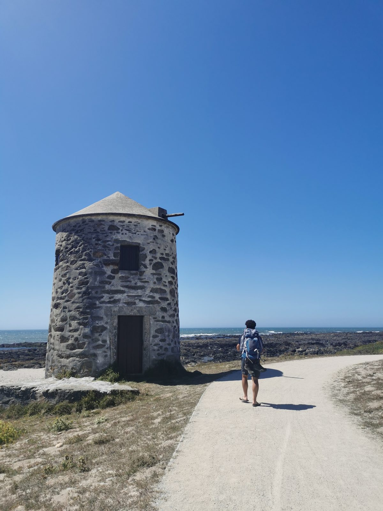

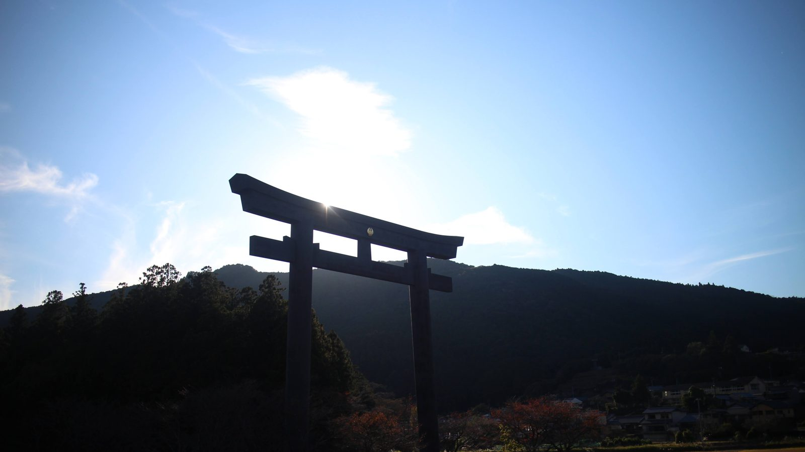

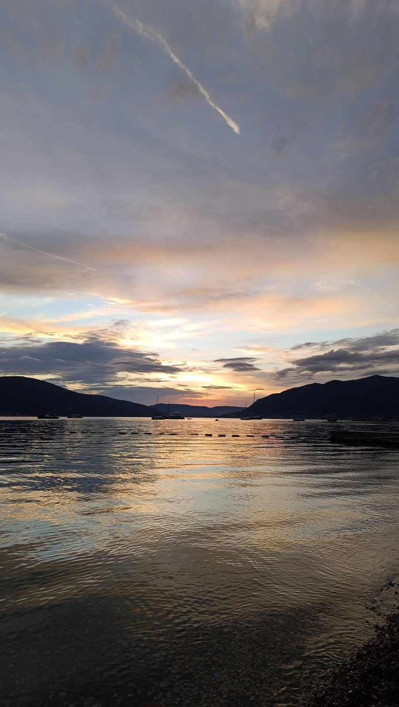


When the Covid lockdown hit my brothers and me, we peaked in comedy:
In Tre NosYouTube channel · in Italian
Get in touch
If you are a teacher, journalist, student or simply a curious person and you would like to talk about any of this, feel free to drop me an email.